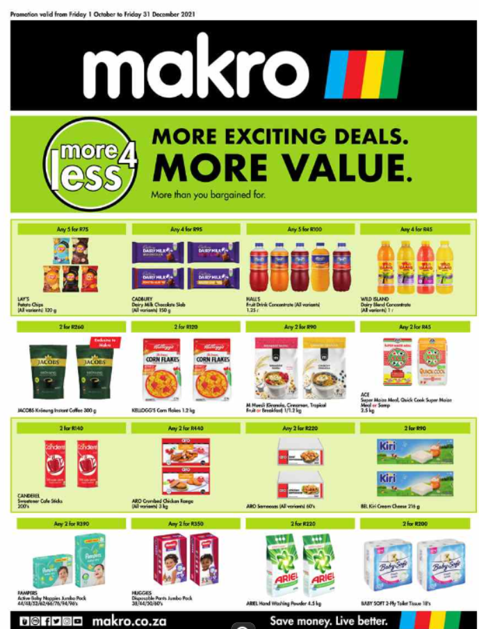
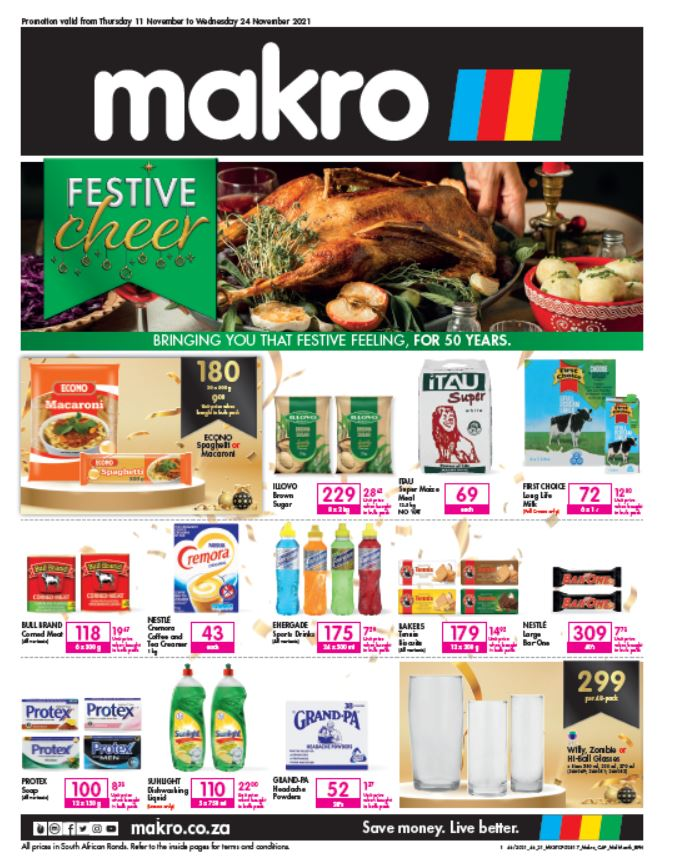

The evolution of Makro Makro has evolved in the retail space from a stalwart warehouse chain to now being able to offer customers a convenient online shopping hub. Makro offers food, the latest electronics, houseware, camping and outdoor equipment and even liquor. A total of 22 Makro stores trade in South Africa, bringing convenience and affordability to local households and businesses. With the ecommerce addition to our digital offering, customers can now enjoy Makro’s deals and value-added services across a broader reach of locations. Our extensive online shopping range includes the majority of items you would expect to find in any Makro store and carries with it the same ethos we have always maintained. We operate under a low cost/ low margin trading philosophy, enabling us to deliver quality merchandise at competitive prices. Over the years Since opening our first store in 1971 in Germiston, Makro has grown immensely. Opening our first store was a milestone for South Africa – it became the first cash-and-carry store in the country making use of top-end technology for stock and sales tracking.
 